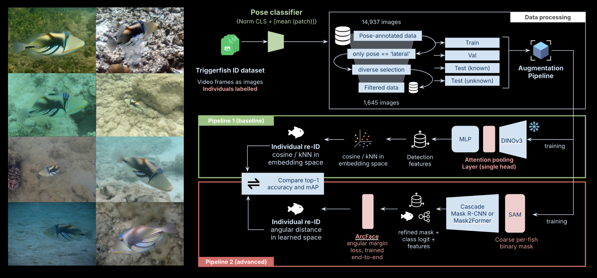
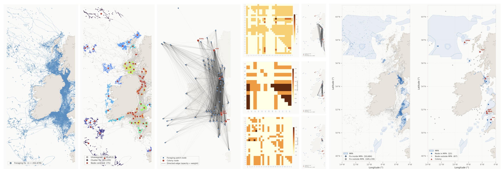
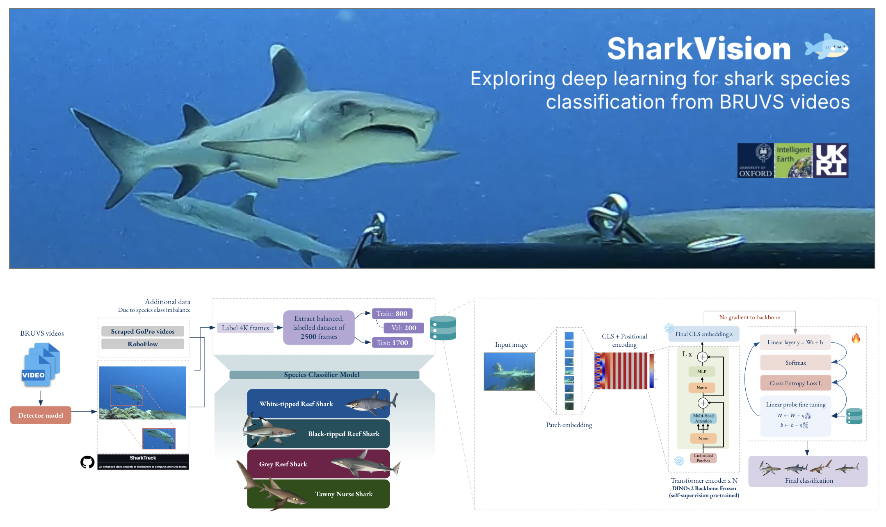
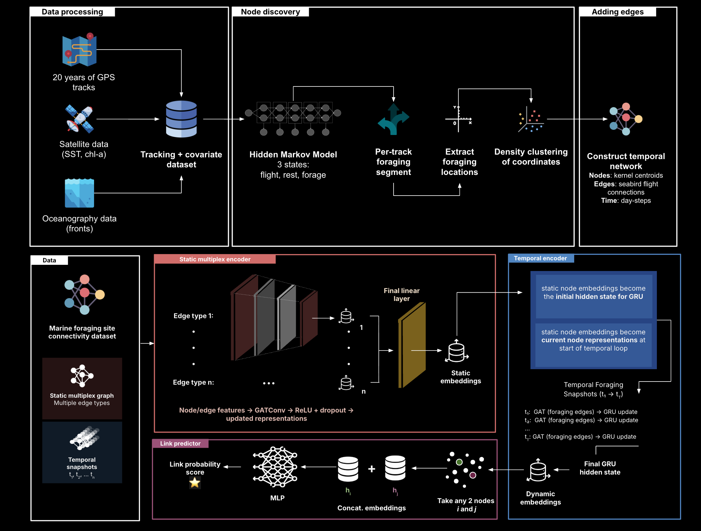
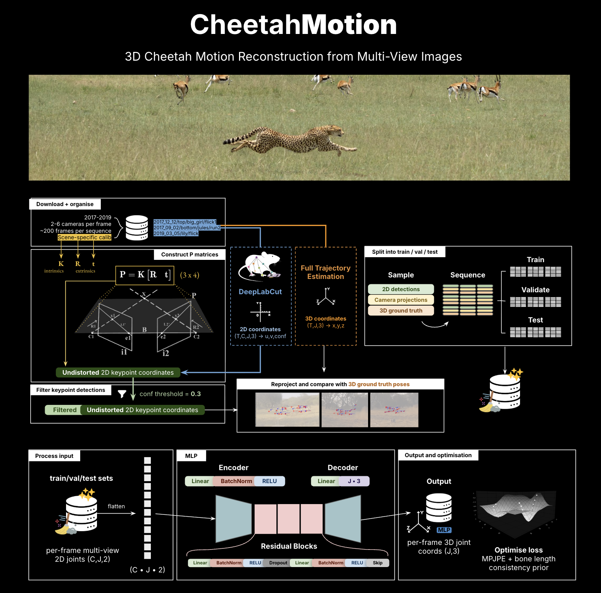

Research

Deep learning-based instance segmentation and individual re-identification of reef fish in the wild
I build an annotated dataset combining controlled laboratory footage and in situ imagery of Picasso triggerfish (Rhinecanthus aculeatus), labelled for detection and individual identity. I then implement and evaluate a deep learning pipeline for instance segmentation and individual re-identification, running optimisation experiments to test the effects of different object detection, representation learning and loss function choices on model performance.
instance segmentation individual re-id computer vision ecology

Modelling Seabird Foraging Dynamics in the Celtic Seas Using Network-Based Machine Learning
Using 20 years of GPS tracking data from Manx Shearwaters, I construct temporal movement networks and apply graph-based machine learning models to predict foraging connections between marine sites. I test whether these methods outperform traditional models and whether environmental variables improve predictions. Using the best model, I assess system resilience and identify key foraging sites, evaluating their protection under existing MPAs.
graph ML network science ecology conservation

SharkVision: Deep Learning for Shark Species Classification
We implement three deep learning computer vision pipelines for processing Baited Remote Underwater Video Systems (BRUVS) videos to detect sharks and classify them into one of four target species.
species classification computer vision ecology

TM-GNN: a Factorised Temporal Multiplex Graph Neural Network for Dynamic Link Prediction
We introduce a factorised temporal multiplex graph neural network (TM-GNN) architecture for dynamic link prediction in temporal multiplex networks, which we apply to a seabird movement network to predict foraging connections between marine sites and identify key sites for conservation.
graph ML network science

CheetahMotion: 3D Cheetah Motion Reconstruction from Multi-View Images
Using a labelled 3D pose estimation dataset of cheetahs in the wild, we implement three pipelines using direct linear triangulation, optimisation and a simple multi layer perceptron to reconstruct 3D cheetah motion from multi-view videos.
3D motion computer vision ecology